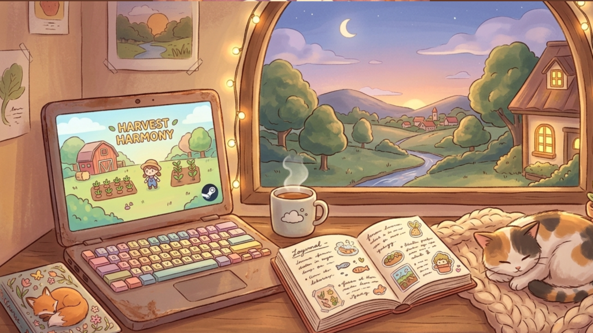
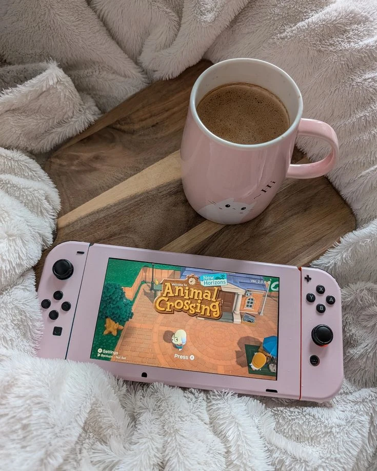
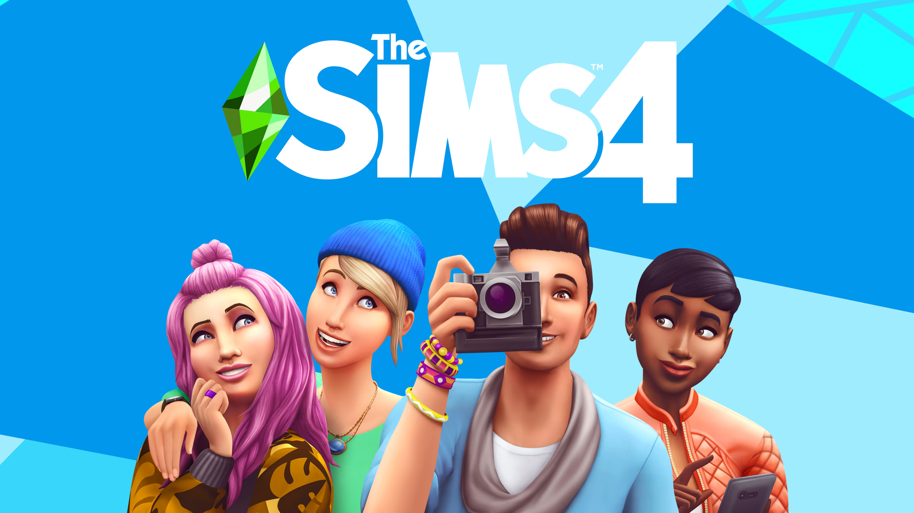

Un pequeño blog para descubrir videojuegos cute y relajantes para chicas!
Bienvenidos a mi lindo blog
Bienvenidos a este rincón dedicado a los juegos cozy para chicas, aquí compartiré recomendaciones de juegos que encuentre y mis experiencias jugandolos.
Acerca de mi
Mi nombre es Amanda, soy una chica a la que le encanta jugar videojuegos pero me gustan especialmente los que son relajantes o cozy, disfruto de cocinar, tener plantas y estar con mis mascotas, así que me encantan los juegos que incluyan esas tématicas.
Sé que la industria de los videojuegos está llena de juegos para el público masculino ya que este género es el mayor consumidor, pero yo en esta página compartire juegos que haya encontrado y que se que a muchas de las chicas nos gustarán.
Mis intereses
Videojuegos cozy
Juegos de simulación
Explorar mundos virtuales
Personalizar personajes
Descubrir nuevos juegos
Mis publicaciones
¿Qué son los videojuegos cozy?
Los videojuegos cozy son experiencias que suelen enfocarse en la
tranquilidad, la exploración y la creatividad. Muchos permiten al
jugador avanzar a su propio ritmo sin sentir demasiada presión.
Este tipo de juegos puede incluir actividades como decorar una casa,
cuidar animales, cultivar plantas o conocer personajes.

¿Que aportan este tipo de videojuegos?
Según la psicología, este tipo de juegos regulan el sistema nervioso, disminuyen los niveles de cortisol (la hormona del estrés) y generan calma. Son recomendados para reducir la ansiedad diaria, ya que no presionan al jugador con cronómetros estrictos ni castigos severos.

Mis recomendaciones
Si estás buscando videojuegos relajantes, bonitos, divertidos, aquí te recomiendo algunos de mis favoritos.
Stardew Valley
Aquí serás la nieta de un granjero que te cedió su granja. Puedes crear tu propio avatar, personalizar la granja a tu gusto, tener mascotas y animales de rancho, cosechar, vender productos e ir a festivales.
También puedes casarte con personajes y tener hijos. Este juego es super adictivo y relajante, es mi juego favorito en el mundo.
Los sims 4
Los Sims 4 es una excelente opción para quienes disfrutan creando personajes, construyendo casas y diseñando diferentes estilos de vida. Me parece un juego muy entretenido porque permite usar la imaginación y crear historias diferentes en cada partida.

Infinity Nikki
Recomiendo Infinity Nikki a quienes aman la moda, los paisajes hermosos y la exploración. Puedes conseguir atuendos, vestir a Nikki con diferentes estilos y descubrir un mundo lleno de magia.
Si quieres descubrir más videojuegos de este estilo, puedes visitar
Steam
y explorar su catálogo de juegos.